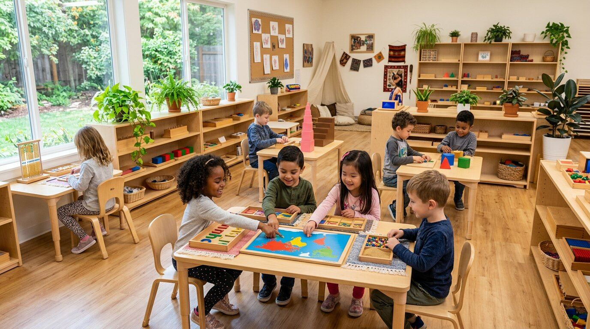

Authentic Montessori
Not "Montessori-inspired" — the real method, with certified materials, mixed-age classrooms and child-led work that builds deep focus and independence.
"Where Excellence Meets Opportunity"
St. Duke's Montessori gives children aged 18 months to 12 years the freedom to fall in love with learning — guided by expert teachers in a calm, joyful, child-sized world.


For over three decades, families in Greenville have trusted us to nurture curiosity, confidence and kindness. Here, children aren't rushed or compared — they're known, guided and celebrated, one small victory at a time.
We asked our parents what made the difference. These five things came up again and again.
Not "Montessori-inspired" — the real method, with certified materials, mixed-age classrooms and child-led work that builds deep focus and independence.
Every lead guide holds AMI or AMS certification, with an average 12 years of experience. Low turnover means your child is taught by teachers who truly know them.
Secured single-entry campus, CCTV in common areas, strict sign-in/out, and every staff member background-checked and first-aid certified.
Academics matter — and so do kindness, resilience and joy. Grace & courtesy lessons, mindfulness moments and daily outdoor time are built into every day.
Parent coffee mornings, family festivals, grandparents' days and an open-door policy. You'll never wonder what's happening in your child's day — you'll be part of it.
Our graduates consistently gain admission to their first-choice schools and score in the top quartile on readiness assessments — while still loving school.
Four carefully designed stages, each building independence, mastery and a genuine love of learning.
 18 mo – 3 yrs
18 mo – 3 yrs
Gentle beginnings: language explosion, movement, practical life and joyful first friendships.
Explore program 3 – 6 yrs
3 – 6 yrs
Reading, writing, math and grace & courtesy blossom through hands-on Montessori materials — including Kindergarten year.
Explore program 6 – 9 yrs
6 – 9 yrs
Big questions, great stories and cosmic education: research, collaboration and real academic depth.
Explore program 9 – 12 yrs
9 – 12 yrs
Leadership, entrepreneurship and advanced projects that prepare confident secondary-ready graduates.
Explore programReal children, real results — because confidence built early lasts a lifetime.
Maya & Jordan's team designed a recycling-sorting robot that reached the state finals — a project born in our Upper Elementary makerspace.

Sofia joined Children's House at 3, read her first chapter book at 5 — and just won the county spelling bee against 4th-graders.
Every 2026 graduate was accepted into their family's first-choice middle school — with scholarship offers to four of our six graduating students.
"My daughter went from shy and quiet to confidently leading her class presentations. The teachers saw something in her before we did. Choosing St. Duke's was the best decision we've made as parents."
"We moved our son mid-year after he was miserable at his old school. Within three weeks at St. Duke's he was racing us to the car in the morning. His grades — and his smile — say everything."
"As a first-time mom, safety was everything to me. The secure campus, the daily photo updates, the way teachers greet my twins by name — I drop them off with total peace of mind."
"Three children, nine years at St. Duke's. Each one challenged at exactly their level, each one completely different, each one thriving. The value for money is extraordinary."
Nov 14
Tour the classrooms, meet our guides and watch Montessori in action. Free family activities and application-fee waiver for attendees.
Reserve a spot Oct 9
Oct 9
Our young scientists present this year's investigations — from volcano chemistry to a working miniature water cycle.
See the schedule Sep 2026
Sep 2026
Our biggest campus upgrade yet: a robotics lab, junior science lab and design studio, now open to all Elementary students.
Read the storyPhotos tell part of the story. Twenty minutes in our classrooms tells the rest. Book a private tour — we'd love to meet your family.
2027/28 application deadline: February 15, 2027